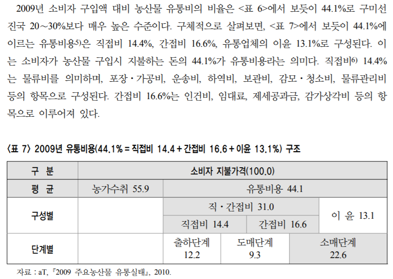
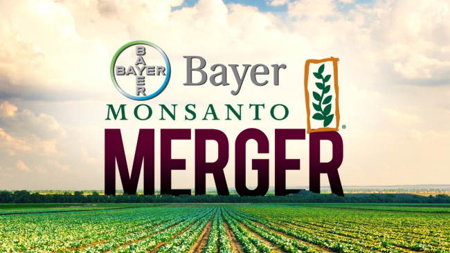
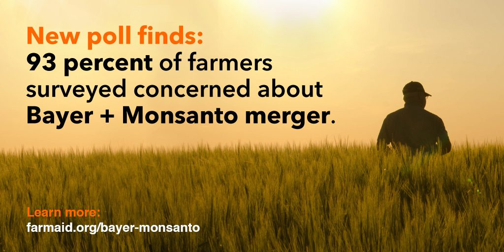

엘리자베스 워런은 사회주의자인가 ?
게시: 2019-11-21T06:30:14+09:00
엘리자베스 워런(Elizabeth Warren)이 미국 대통령이 될 가능성이 점점 높아지면서, 미국에서도 워런을 '사회주의자'라거나 '시장경제 파괴자' 등으로 매도하는 움직임이 점점 더 강해지는 것 같습니다. 최근에 또 엘리자베스 워런의 선거팀이 올린 글을 읽었는데, 이번에는 미국의 농가들에 대한 것입니다. 이를 읽고 제가 느낀 것을 요약하면 2가지입니다. 1) 워런은 결코 사회주의자가 아니며 오히려 '시장경제의 핵심은 경쟁'이라는 것을 잘 이해하는 진짜 시장주의자입니다. (웃기게도, 그 부분이 대기업들이 싫어하는 부분입니다.) 2) 미국 농업의 경쟁력이 세계 최고라고들 하지만, 결국 수익은 미국 농가들을 쥐어짜는 대형 농업 관련 기업들이 다 가져가며 미국의 가족농들도 어렵기는 마찬가지인 모양입니다. 여러분도 짧게 읽어보시도록 원문 중 주요 부분을 발췌 번역했습니다. 미국 가족농을 위한 공정한 경쟁의 장을 만들자 (Leveling the Playing Field for America’s Family Farmers) 대대로 미국의 가족농들은 성실한 노동과 독립이라는 전통을 이어왔습니다. 현대의 가족농들도 같은 핵심 가치를 공유하고 있지만 경제적으로는 점점 더 미약해지고 있습니다. 작년의 경우, 미국인들이 음식에 소비하는 1달러 당 미국 농부가 가져가는 돈은 불과 15센트에도 미치지 못했는데, 이는 농무부가 그 숫자를 추적하기 시작한 1993년 이래 가장 낮은 비율입니다.

(우리나라 농산물 가격 중 농부가 가져가는 비용이 얼마인지 찾아보려고 했는데, 이 논문에서는 위와 같이 나오네요. 보통 뉴스에서 듣던 식으로 소비자는 4천원에 사는데 농촌 현지에서는 500원에 판다는 말이 사실이 아닌 걸까요, 아니면 위 표에서 말하는 농가수취라는 용어가 농가가 가져가는 액수가 아닌 걸까요? 저는 잘 모르겠습니다. 위 표의 출처는 http://www.kfma.ne.kr/studydata/네번째논문.pdf 입니다.)
오늘날 농부들은 열심히 일하고 모든 것을 제대로 하고, 심지어 날씨까지 도와준다고 해도 수지타산을 맞출 수가 없습니다. 그건 오늘날의 농부들이 그 아버지나 할아버지 세대보다 끈기나 사업가 기질이 부족하거나 덜 헌신적이어서가 아닙니다. 그렇게 된 것은 워싱턴에서 결정된 나쁜 정책이 일관적으로 가족농의 이익보다는 다국적 기업과 대기업 로비스트들의 이익을 더 챙겨주었기 때문입니다. (중략) 합병 저지 (Tackling Consolidation) 먼저, 우리는 농업 부문에서의 합병 문제를 해결해야 합니다. 이것이 가족농들에게 훨씬 더 적은 선택권과 더 박한 이익, 그리고 대기업에 대한 의존성을 강요하는 것이기 때문입니다. 연방 규제위원들은 다국적 기업들이 경쟁 구도를 분쇄하고 주요 시장에 대한 통제권을 장악하도록 허용했습니다. 지난 수십년에 걸쳐, 거대 농업 관련 기업들은 점점 더 대형화되었습니다. 그들은 여태까지 다우-듀퐁(Dow-Dupont)과 신젠타-켐차이나(Syngenta-ChemChina)의 경우처럼 수평적 합병을 해왔습니다. 이제 그들은 수직적으로도 확장했습니다. 타이슨(Tyson) 사를 예로 들어보지요. 타이슨 사는 닭을 시장에 내놓기까지의 닭의 사료, 도축, 배송 등 모든 과정을 통제합니다. 예외가 되는 것은 딱 하나, 농장을 직접 소유하는 것 뿐입니다. 양계업자들은 결국 '계약 양계' 체계 속에 갇히게 되는데, 이 속에서 그들은 양계 시설을 짓고 업그레이드하는 것에 대출을 얻는 등의 큰 위험 부담을 떠앉게 됩니다. 그렇게 하면서도 병아리를 받고 사료를 구입하고 다 큰 육계를 판매하는 등의 모든 측면에 있어서 타이슨 사에 전적으로 의존해야 합니다. 합병과 확장의 결과는 엄청난 시장 장악력입니다. 육가공 업종 상위 4개사가 전체 시장의 53%를 점유합니다. 3개 대형 치킨 회사의 시장 점유율은 90%에 달합니다. 상위 2개 종자 회사, 즉 몬산토(Monsanto)와 듀퐁(DuPont)은 2015년 기준으로 곡물 종자 시장의 71%를 점유했습니다. 이건 몬산토가 바이엘(Bayer)과 합병하고 듀퐁이 다우(Dow)와 합병하기 전인데도 그랬습니다. 보수적으로 추산해도, 새로 합병된 바이엘-몬산토(Bayer-Monsanto) 혼자서도 미국 전역의 채소 종자 시장 전체의 37% 이상을, 그리고 일부 채소 시장의 50% 이상을 장악하게 됩니다.
 
(미국 농부들은 바보가 아닙니다. 93%의 농부들이 바이엘-몬산토 합병에 대해 우려한다고 설문조사에 답했습니다.)
"인수합병은 농부들이 사고 파는 것에 대한 선택의 범위가 점점 줄어든다는 것을 뜻합니다. 또 수직적 통합은 공급 사슬 전체에 걸쳐 대형 농업 관련 기업들의 경쟁이 더 적어지고 그에 따라 이익은 더 늘어난다는 것을 뜻합니다. 그 결과 미국인들이 음식에 소비하는 1달러 당 농부들이 받는 돈은 기록적으로 낮아지게 되는데도 음식물 가격은 내려가지 않으며, 농업 관련 기업들의 CEO와 기타 이사진들은 그 수익을 긁어들이고 있습니다. 대형 육가공 업체인 스미스필드(Smithfield)를 소유한 차이니즈(Chinese) 그룹의 CEO는 2017년 한 해에만 2억9천1백만 달러를 벌어들였습니다. 저는 농업 분야에서의 합병를 정면으로 저지하고 몇몇 기업들이 시장 전체를 좌지우지하는 것을 분쇄하겠습니다. 그 방법은 다음과 같습니다. 첫째, 저는 반(反)트러스트법 단속관(trustbuster)들을 임명하여 경쟁을 감소시키는 인수합병을 검토하고 필요시 불허하겠습니다. 거기에는 결코 승인되어서는 안되는 딜이었던 최근의 바이엘-몬산토(Bayer-Monsanto) 합병도 포함됩니다. 저는 처음부터 이 인수합병건에 반대했으며 트럼프 행정부가 올해 초에 이를 승인한 것에 대해 깊이 실망했습니다. 저는 경쟁이 치열한 시장을 조성하기 위해 현존하는 도구를 진지하게 사용할 뿐만 아니라 최근 농업 분야에서 있었던 인수합병을 검토하여 경쟁을 감소시킨 합병을 취소하는데 헌신할 규제위원들을 연방통상위원회(Federal Trade Commission)와 법무부(Department of Justice)에 임명하도록 하겠습니다. 둘째, 저의 팀은 수직으로 통합되어 시장을 점점 더 장악해가고 있는 대형 농업 관련 기업들을 쪼개도록 하겠습니다. 법무부는 지난 35년 간 수직적 인수합병에 대한 가이드라인을 개정하지 않았습니다. 그 시기에 우리는 농업 부문 공급 사슬의 모든 측면에 걸쳐 합병이 연달아 일어나는 것을 지켜봐야 했습니다. 저는 다른 부문들에서도 닭고기 부문과 같은 일이 반복되는 것을 보고 싶지 않습니다. 제 행정부에서는 수직 통합건들을 재검토하여 쪼개도록 하겠습니다. 농업에서의 합병은 가족농의 수익성을 해친 더 넓은 범위의 합병 트렌드 중 하나에 불과합니다. 수송 부문에서의 합병은 농부들이 그 농산물을 배송하고 농촌이 경제적으로 경쟁하는 것을 더 어렵게 만들었습니다. 은행 부문의 합병은 지역 은행에 타격을 입혀 영세기업과 농장들이 대출을 받는 것을 어렵게 했습니다. 의료 분야의 합병은 쉽게 접근할 수 있는 고품질 치료로부터 많은 농촌 지역을 배제시켰습니다. 제 행정부는 경쟁을 촉진시키고 이런 트렌드를 뒤바꿔 놓겟습니다. 하지만 이 모든 것은 농업 부문에서의 합병을 정면으로 공격하는 데서 시작됩니다. 우리는 가족농들에게 더 많은 선택권과 시장에서의 더 많은 협상력을 주어 경제적 안정을 쌓아갈 수 있도록 해야 합니다. 규제 개혁(Un-Rigging the Rules) 합병이 가족농들의 목을 조르고 있습니다만, 대기업들이 가족농의 이익을 뽑아먹도록 규제를 악용하는 방법은 아주 많습니다. 저는 이런 규제를 바꾸도록 투쟁하겠습니다. 예를 들어, 많은 농부들은 농기구 수리에 있어 승인된 업체에게 의존하도록 강요받고 있습니다. 기업들이 농기계에 진단용 소프트웨어를 심어놓았기 때문에 승인된 업체로부터의 코드가 없으면 아예 수리가 불가능하도록 만들어놓았습니다. 이는 곧 더 높은 가격과 손해가 발생하는 수리 연체로 이어집니다. 이건 말도 안되는 이야기입니다. 농부들은 자신의 농기계를 직접 수리하거나 여러개의 수리점 중에서 선택을 할 수 있어야 합니다. 그것이 바로 제가 전국적 '수리 권리' 법안(right-to-repair law)을 지지하는 이유입니다. 이 법안이 통과되면 농부들은 농기계 수리를 위해 승인된 업체에만 가야할 필요가 없어집니다. 전국적 '수리 권리' 법안은 농기계 제조업체들에게 진단용 도구와 매뉴얼, 그리고 기타 수리 관련 자재들을 그들 자신의 대리점과 승인 업체 뿐만 아니라 개인과 기업에게 제공하도록 합니다. 이로써 개인이 자신의 농기계를 직접 수리하여 수리가 연체되는 일이 없도록 할 뿐만 아니라 대리점들과 독립적 수리점들이 경쟁하도록 만들어 전반적인 가격이 떨어지게 됩니다. 연방정부 행정부의 공제(checkoff) 프로그램도 가족농에게 불리하게 조작되어 있습니다. 쇠고기, 돼지고기, 닭고기, 달걀과 곡물 등 일부 품목의 생산자들은 그 매출액의 일부를 연방 공제 프로그램에 납부하도록 되어 있는데, 이 프로그램은 전국 광고 캠페인의 비용을 대는데 사용됩니다. 하지만 공제 프로그램은 경쟁을 압살하는데도 사용되어 왔습니다. 가령 달걀 위원회는 어느 작은 마요네즈 회사에 대항하는 캠페인을 벌이기도 했습니다. 이 기금 프로그램을 감독하는 위원회는 프로그램을 잘못 관리하여 대형 농업 관련 기업에 이익이 되는 로비성 캠페인에 돈을 댄 적도 있습니다. 우리는 이런 공제 프로그램을 개혁하여 부패를 뿌리째 뽑아야 합니다. 저는 공제 프로그램이 강제가 아닌 자발성으로 전환되도록 하는 법안을 지지하며 위원회가 반경쟁 행위 및 대정부 로비에 개입하지 못하도록 하겠습니다. 마지막으로 계약 양계업(contract chicken farming)은 이미 농가들을 파산 직전까지 몰아붙였습니다. 이런 거래의 확산을 막기 위해서, 저는 남용적인 계약 농업을 축산업에서는 금지하도록 해야 한다고 믿습니다. 우리 농부들이 받는 대접은 지금보다는 더 나아야 합니다. (하략) 이하로도 2개 문단이 더 있습니다만 미국 국내 문제라서 우리에게는 크게 의미가 있지 않아 번역하지 않았습니다. 원문은 아래 링크를 클릭해서 읽어보세요. https://medium.com/@teamwarren/leveling-the-playing-field-for-americas-family-farmers-823d1994f067